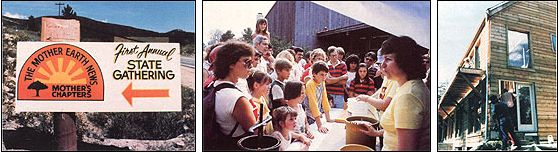
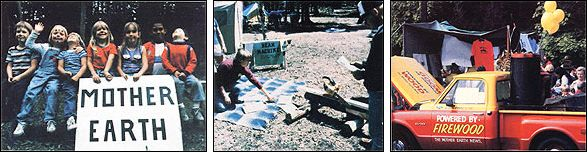

Despite the fact that the eleven o'clock news always seem to be bad, there're still a lot of good things going on . . . and Mother's Chapter are helping to make a number of them happen!
Reports are continually coming in from Mother's Chapters all over the country, and it looks as though our fledgling network is coming along very well indeed! From New Jersey to California, members have been busy conducting workshops . . . planning excursions . . . giving presentations . . . tackling projects . . . establishing recycling centers . . . and holding sales, swap sessions, fairs, and conventions.
For example, members of Chapter No. 4 (Minden, Nevada) had this to say about their swapping programs: "Barter is becoming more and more a way of life for us, since it promotes good fellowship and honesty between people. We know that paying someone to fix our car or to help build our home doesn't mean that they'll do a good job. (In fact, the opposite seems to be more and more the case.) But if we trade services, our satisfaction is almost guaranteed, because the people we deal with will want quality jobs in return." The Nevada group has also sponsored an Oktoberfest and a workshop on the virtues of light-concentrating solar collectors.
Chapter No. 5 (Minneapolis, Minnesota) believes in simplifying the ways in which we go about filling our basic needs. And the group spreads the word through its newsletter, the Robbinsdale Resourcer, which contains - among other things - many valuable gardening hints from "The Green Wiz". Details of chapter workshops on homemade roofing and solar greenhouses are also included . . . as is information on chapter swap meets.
Chapter No. 8 (Puyallup, Washington) has compiled a complete, up-to-date member profile list, plus a swap card file to be used as a skills bank. The group has also held a full-fledged barter fair . . . and conducted workshops on rabbit raising, tool sharpening, passive solar design, food preservation, cider pressing, and "living poor with style".
The members of Chapter No. 13 (Denver, Colorado) sponsored and organized their state's first Mother's Chapters convention, which was held at the Pickle Gulch Campground in the mountains of the Arapaho National Forest near Central City. The gathering was open to the public, and - thanks to announcements in the local newspapers, shoppers' guides, and classified throwaways, plus an eye-catching sign on the main highway - it drew a crowd of nonmembers who were eager to learn what MOTHER and the chapter organization are all about. The displays included an exhibit of various sundried foods, and another of lesser-known grains. There were also demonstrations of silk-screen printing (using a commemorative design that will be reproduced on members' Tshirts at a future meeting) and practical dowsing (for water, minerals, etc.) . . . classes in adjusting furnace fan and thermostat settings to achieve maximum efficiency and economy . . . and a nature walk at the convention site in which the features, names, and uses of various trees, wildflowers, herbs, and fungi were pointed out.
Vegetarianism, in theory and practice, was discussed during one session . . . the how-to of forming food cooperatives was explained in another . . . and a proposed self-sufficient community - to be formed near Gunnison, Colorado - was described in a third. The Tesla coil was the subject of still another presentation. Invented a number of years ago by Nikola Tesla (designer of the power system at Niagara Falls), the device was developed to tap into the natural energy of the earth and convert it into usable electricity. According to the speaker, the invention has been successfully demonstrated, but has not yet been widely accepted or acknowledged as a viable alternative energy source.
Chapter No. 14 (East Troy, Wisconsin) held a two-day workshop on wild plants . . . which included a slide presentation, tips on plant preparation, open discussion groups, and a chance to sample Jerusalem artichokes. The gathering's special guest was Keeway-dinoquay . . . a professor of ethnobiology at the University of Wisconsin in Milwaukee, who also happens to be an Ojibway medicine woman. The workshop included a short expedition to find and study local plants.
Chapter No. 24 (Vineland, New Jersey) has already doubled its original membership and obtained the use of a clubhouse for chapter meetings and projects. The group's activities have included yard sales, collecting glass and aluminum for recycling, coupon exchanges, food swaps, bartering, and assisting each other in working on home additions and repairs, lawn care, and the construction of solar collectors and looms. In addition, the chapter has compiled a resource library and a skills sheet, and now issues a newsletter as well.
Chapter No. 27 (San Bernardino, California) has sponsored seminars on everything from butchering chickens to making cheese. In fact, in the course of four canning sessions, 211 quarts of fruit and pickles were put away! The group has also started an information library and (are you ready for this?) a chapter "heap" . . . which consists of an area where any and all potentially useful items can be stashed. Members are asked to collect such things as tire tubes found along the highway, discarded wheels, washtubs, old pallets, junked water heaters, and what have you . . . all of which are then placed in the chapter's "treasure yard" to be used by members on a first come, first served basis. It's a real scrounger's paradise!
Chapter No. 56 (Syracuse, New York) made an appearance at the Golden Harvest Festival at the Beaver Lake Nature Center in Baldwinsville, New York, and - according to the report we received - the occasion was a huge success. Demonstrations went off "like clockwork", sales generated over $1,000 for the chapter's bank account, and more than 50 would-be members signed up for more information about the chapter. MOTHER's own John Vogel was there with our experimental wood-gas truck, and managed to make appearances on four TV stations and arrange interviews on three radio programs and with several local newspapers. That provided good publicity for the local chapter, the chapters organization in general, and the festival.
Chapter No. 61 (Kalamazoo County, Michigan) published its first newsletter in September. The premier issue reported on a visit from John Vogel and the wood-gas truck . . . and a fund-raising flea market that featured 12 booths where folks could learn herb drying, organic farming, spinning wheel operation, solar collector construction, and more. (Of course, there were items on sale, too . . . ranging from antiques and Angora rabbits to a pony and a speedboat!)
We're really proud of the good work our chapter people are doing. Keep it up, folks . . . we're rooting for you!
NATIONAL CONVENTION
This year's National Chapters Convention, held at the Eco-Village last August, was rewarding for everyone who attended. There were plenty of activities, from the first group meeting to the special half-day and full-day workshops (open only to chapter members). Participants built solar collectors, helped brew alcohol fuel, and learned about earth-sheltered housing and biodynamic/French intensive gardening.
Saturday and Sunday nights featured hot dog roasts, followed by a mountain music concert and a talent show (at which, among other things, a cantaloupe was hypnotized!).
All in all, chapter representatives felt that they'd learned a lot, really enjoyed meeting one another, and agreed that the whole thing was an extremely worthwhile event. It certainly "brought home" the value of interaction in furthering MOTHER'S goals.
EDITOR'S NOTE: A state-by-state directory of Mother's Chapters appears on page 178 of this issue.
|
 Staff Photos (LEFT TO RIGHT) Welcome to Pickle Gulch Campground, Colorado! . . . The crowd is fascinated by a demonstration at the Golden Harvest Festival in New York . . . The Colorado convention featured tours of an ""envelope"" house |
 Staff Photos (LEFT TO RIGHT) The youngsters put on painted faces . . . while the grown folks learn how to make beams with a chain saw . . . Festival attendees examine MOM's wood-gas truck. |
|